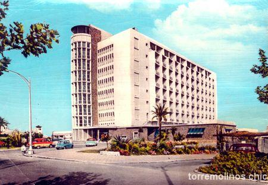
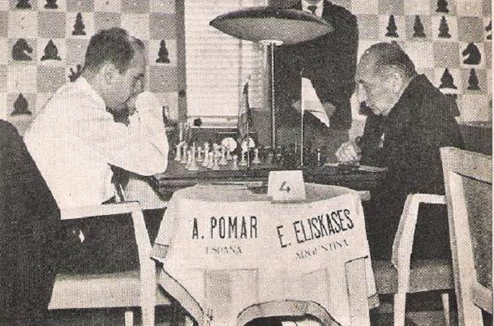
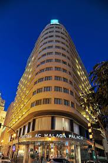
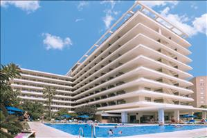
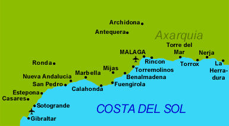

| COSTA DEL SOL |
| JAN VAN REEK |
Pgn-file Costa del Sol Cb-files Costa del Sol
When tourism developed at the
Spanish coast, it became feasible to organize an annual chess event during the
off-season. A long series of master tournaments was played at the Costa
del Sol from 1961 until 1981. The first event happened at Hotel Pez
Espada in Torremolinos from 24 i until 7 ii 1961. Six Spaniards and six foreigners
competed. It became a race between Gligoric and Pomar Salamanca.
Gligoric won on tie-break and got a trophy. Five grandmasters
participated in 1964 (Malaga). Pomar Salamanca won.
|  |  |
 |
| Hotel Pez Espade in Torremolinos | Pomar Salamanca - Eliskases in 1961 | Pomar Salamanca - O'Kelly de Galway in 1962 |
The formulae started to change in 1969, because the number of participants in the closed tournament started to differ from twelve. Future stars have been invited since 1969. Pomar Salamanca won in 1971 by defeating Timman in the last round. Main competitors in the series were Pomar Salamanca (until 1976) and O'Kelly de Galway (until 1973). Both men won three times. Torre scored a grandmaster result in Hotel Cervantes (1974).
|  |  |  |
| Hotel Malaga Palacio | Hotel Cervantes in Torremolinos | The tournament places were Fuengirola, Torremolinos and Malaga |
The level went downwards during the last tournaments, but the victory by Tal in the last installment became a highlight.
First places in Costa del Sol
|
1961 Gligoric and Pomar Salamanca 1962 Parma, Szabo and Perez Perez 1963 O'Kelly de Galway 1964 Pomar Salamanca 1965 Medina Garcia 1966 O'Kelly de Galway and Jimenez Zerquera 1967 O'Kelly de Galway 1968 Ivkov and Marovic 1969 Benko and Ivkov 1970 Benko and Kurajica |
1971 Pomar Salamanca 1972 Hecht 1973 Benko and Quinteros 1974 Torre and Gheorghiu 1975 Quinteros and Radulov 1976 Robert Byrne 1977 Christiansen 1978 Bellon Lopez 1979 Martin Gonzalez, Castro Rojas and Padevsky 1980 Seirawan 1981 Tal |
 |
Go to home page |